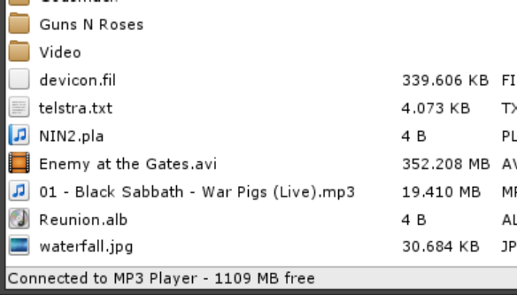
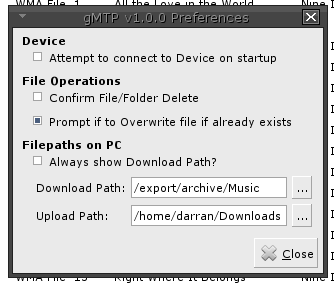

A simple MP3 player client for UNIX and UNIX like systems.
Darran Kartaschew (aka Chewy509).
Released under the BSD License. 2009-2011.
Due to Oracle Solaris 10 not having a native MTP based MP3 player support application, I've written my own GUI client for MTP devices. It supports:
For other needs like managing your audio collection, ripping CDs I suggest you look at another full featured media application.
Download SYSV package, gunzip it and use 'pkgadd -d gMTP-1.0.1-i386.pkg' to install.
gMTP is available in the unstable (sid) package lists. Use 'apt-get' to install.
gMTP is available in the universe package lists. Use 'apt-get' to install.
gMTP is available in the AUR (Arch User Repository).
See:
https://aur.archlinux.org/packages.php?ID=47774
Download the libmtp source code, unpack and run:
$ CFLAGS="-I/usr/sfw/lib -L/usr/sfw/lib -R/usr/sfw/lib" INSTALL=/usr/ucb/install MAKE=gmake ./configure
$ gmake
# gmake install
Note: If you don't have a libusb.pc file (configure may complain about libusb being missing on
Solaris 10/11), then you can use this one. Copy to
/usr/lib/pkgconfig/libusb.pc.
Once installed, test the mtp package by connecting your MP3 player, and run mtp-detect
from a terminal prompt. If all is well, you should see your device details scroll across the screen.
Download the libid3tag source code, unpack and run:
$ INSTALL=/usr/ucb/install MAKE=gmake ./configure
$ gmake
# gmake install
Copy id3tag.pc to /usr/local/lib/pkgconfig/id3tag.pc
Download the FLAC source code, unpack and run:
$ INSTALL=/usr/ucb/install MAKE=gmake ./configure
$ gmake
# gmake install
Download and unpack the source code. Update the PREFIX variable in the Makefile if
you want to install to anywhere other than /usr/local.
$ gmake
# gmake install
# gmake register-gconf-schemas
$ gmake gtk3
# gmake install-gtk3
# gmake register-gsettings-schemas
Then run
$ gmtp
to start the application. Feel free to add a launcher or shortcut to the main menu as needed.
Note: For Solaris 10/OpenSolaris/Solaris 11 Express, the default makefile assumes you have SunStudio
12 installed. If you don't then modify the make file to use gcc instead. All other
OSes will use gcc as default.
Note: On Linux based systems, use make instead of gmake.
gMTP Source: gMTP-1.0.1-i386.tar.gz
gMTP Solaris 10 Package: gMTP-1.0.1-i386.pkg.gz (Warning: Does NOT
contain libmtp, libflac or libid3tag).
run
$ gmtp
To start gMTP.

The main Toolbar contains the main functions available for using MTP based devices, or alternative use the main menu or right click on the file area to gain access to basic file operations. All of these are self described.
The default view of the device, is to list all files and folders within the main window. Different columns
for display may be chosen from the View menu. Below is a screen shot of all the different icons
that are shown within gMTP to signify different file types.

Starting from the top these are:
All file operations can be accessed from the File menu, or alternatively, right clicking within the
view area. Double clicking on a file will download it to your PC/Laptop, and double clicking on a folder will access
the contents of the folder. Folders with .. let you move up in the folder structure, (go back to the
previous folder).
Drag'n'Drop support is enabled for uploading files to the device. Simply drop the desired files/folder into gMTP to upload the files/folders to the device.

Application preferences may be accessed via the toolbar, or through the Edit > Preferences menu.
Use the Preferences to set upload and download paths. (Note: the last upload/download path is saved when you
exit the application).
Q. What is MTP?
A. MTP = Media Transfer Protocol. MTP has been adopted by most major MP3 and Mobile Phone manufacturers as the
method of talking to devices to upload/download files to/from a PC.
See Media Transfer Protocol for more information.
Q. Why doesn't gMTP support my iPod or Creative Nomad player
A. These devices do not use MTP for moving data to/from a device. Apple iPod uses it's own custom protocol
in additional to USB Mass Storage and Creative devices use NJB.
Q. I have a MTP enabled device and it is connected to my PC, but it doesn't get detected by gMTP?
A. Most devices are capable of using different modes to talk to your PC, so ensure that the device is in MTP mode.
A. Or, libmtp doesn't know about your device or how to handle it correctly. Run $ mtp-detect to see
if it can be found.
A. Occassionaly, some devices become confused if you connect and disconnect them in gMTP, but do not physically
disconnect/reconnect them. In this instance, close gMTP, physically disconnect and reconnect the device, and
restart gMTP. It should connect.
Q. I get asked which storage device to connect to when I connect to my mobile phone?
A. Some devices (notably mobile phones), have both internal storage (non-removable) and external storage (removable
storage) in the form of a micro-SD card or M2 card, and gMTP will treat these as different storage devices.
Q. Does gMTP support Albums and uploading Album Art?
A. Yes. Album data is autocreated/updated when you upload a MP3 (or other supported audio file) by using information
contained within the audio file, eg. Using the ID3 Tag information in an MP3 file. Once the Album has been created,
you can upload the album art via the Edit / Album Art menu option.
Q. Will this software work on OpenSolaris, Linux, *BSD or other POSIX Operating System
A. I have reports that it runs successfully on OpenSolaris, Arch Linux, Debian and Ubuntu.
Q. What about SPARC, ARM or other non-x86 systems?
A. It should work fine but is untested. (If libmtp and libid3tag work fine on your platform, then gMTP should as well).
Q. Do I need root access to use gMTP?
A. On Solaris 10, in general No. (If you do need root access, then double check your RBAC setup for your user
then). On Linux, in general No, as libmtp
should have set your udev rules correctly for libmtp known devices.
Q. In the file view or playlist editor, tracks have a length of 0:00?
A. The length field displayed is reliant on the track data being set correctly when the audio file was uploaded. Some
file transfer
utilies do not set this information correctly (and earlier versions of gMTP are also guilty of this). Simply download
and re-upload the
audio file using gMTP to correct the track data on the player.
Q. I have the same audio file loaded on my device in different formats, but the song duration is
different between them.
A. WMA, FLAC and OGG all store the song duration in header information, and this is set by the encoder used to create
the file. It may be a bug with the encoder? With MP3 files, the track duration is calculated when the file is uploaded,
so this information should be correct unless you have a corrupt MP3 file.
Q. The translations are pretty awful or just plain wrong, or why don't you have xyz language?
A. The initial translations were done using Google Translate services, so accuracy is not 100%. Please email me with
corrections to existing translations. If you would like a particular language added, and are happy to assist, please
let me know or simply email me with the correct *.po file with the translations for your langauge.
Q. I'm using French Canadian (fr_CA.UTF-8) as my locale on Solaris 10, but I don't get French
translations?
A. This is due to an idiosyncrasy on Solaris 10 and language translations. Either:
French translations should now be present. (Technical information: On Solaris, the gettext() call will only look in the current locale folder as defined by the LC_MESSAGES environment variable and not the base language folder as well for translations, so if the locale is set to 'fr.UTF-8', gettext() will only look in that locale folder and not 'fr' as well - which is what the GNU version of gettext() does). This applies to all languages on Solaris 10. For Linux/FreeBSD uses this should not be an issue as most will use the GNU version of gettext().
Q. The column view options do not appear to be working?
A. The gconf schema was updated in v0.8. Please update your local schema file.
{kind=link}
{kind=link}
{kind=link}
{kind=link}
{kind=link}
{kind=link}